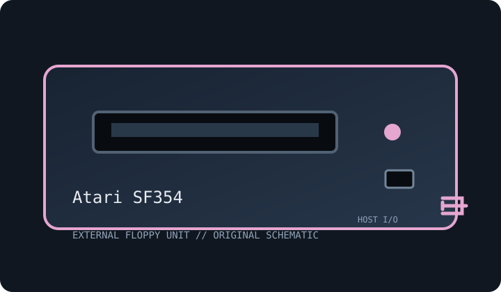

[ FLOPPY DRIVES // IDENTIFIED EXTERNAL MODEL ]
Atari SF354 External 3.5-inch Floppy Drive
Model-specific archive record. Enclosure labels do not always identify the installed mechanism or host controller; preserve the full suffix and inspect the unit before connection or service.

MODEL IDENTIFICATION: Atari SF354. Photograph the nameplate, serial, connector and power rating. Verify revision-specific instructions and inspect any replacement mechanism before use.
Recorded specifications
| Exact model | Atari SF354 |
|---|---|
| Drive size / type | 3.5-inch external floppy drive. |
| Capacity / formats | 360 KB single-sided, double-density Atari ST disk format; filesystem and nominal usable capacity depend on host software. |
| Interface / controller | Atari ST external floppy connector and host disk controller; proprietary cable, not IBM 34-pin or USB. |
| Power | External DC power arrangement varies by unit/region; use only a supply matching the rear-label voltage and polarity. |
| Host OS / system compatibility | Atari 520ST/1040ST-family systems with a compatible external drive port and supported TOS/DOS software. Direct PC/Mac connection is unsupported. |
| Cable / connectors | Atari-specific external data cable; a separate rated DC adapter may be required. Preserve the original connector and wiring. |
Compatibility and preservation caveats
Do not confuse the SF354 single-sided configuration with the SF314. Record the label, board and mechanism revisions; formats are not automatically interchangeable.
Inspect for corrosion, contamination, cracked plastics, damaged shutter, cable strain and prior repairs. Do not insert damaged media. Record host, OS, controller/driver, drive label, revision, media condition and acquisition settings. Preserve original images and document conversions separately.
Manufacturer manuals & archive references
- Atari SF354 Owner’s Manual (Rev. A, 1985) — Internet ArchiveModel-specific owner manual.
- Atari SF314 MicroFloppy Disk Drive Manual (1985) — Internet ArchiveRelated Atari ST drive manual; consult SF354 manual for exact capacity.
Sources are described by scope; a support portal or related-family manual does not establish every model-specific rating. Prefer a complete matching manual and unit label over family-level assumptions.